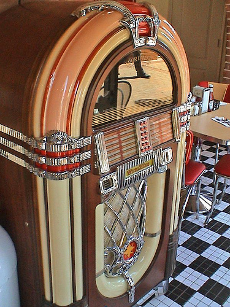

November 8, 2007
Pedagogical Sofware
Literally. See my post on The Plone Blog:
 Filed by jonah at 1:09 am under epistemology,water
Filed by jonah at 1:09 am under epistemology,water
 1 Comment
1 Comment
Literally. See my post on The Plone Blog:
Filed by jonah at 1:09 am under epistemology,water
1 Comment

Originally published on theploneblog.org
Open source software as pedagogical scaffolding, and F/OSS ecologies as a dialogical knowledge communities.
This is a fun post recognizing the role of open source software and breaking routines in learning new programming patterns and paradigms.
7 Reasons I switched back to PHP after 2 years on Rails
Rails was an amazing teacher. I loved it’s “do exactly as I say”
paint-by-numbers framework that taught me some great guidelines.
I love Ruby for making me really understand OOP. God, Ruby is so beautiful. I love you, Ruby.
But the main reason that any programmer learning any new language
thinks the new language is SO much better than the old one is because
he’s a better programmer now!
This story articulated an idea that I have been thinking about for a while – the ways in which developers working on open source software enter into an educational relationship with the software and the community (sometimes indirectly, mediated through the code).
I have often appreciated all that Plone has taught me about the domain of content management, component architectures, extensible software design, internationalization, test driven development, responsible release management, etc etc. I know that it has taught me well since when I walk up to new pieces of complex software like Sakai or Drupal the concepts are familiar and often isomorphic. I can vouch that exposure to Plone has helped designers I know with stretch their CSS skills, improve the accessibility of their sites, and more cleanly separate presentation from logic.
I have also made the case that for an organization to work on software in isolation is bit like having a conversation with yourself. At first you might arrive at some new insights, but its really hard to learn anything new in a hermetically-sealed vacuum chamber. The software world transforms so quickly that it is a Sisyphean task for any one person or organization to track. Joining a community, even if it is through the indirect, intermediary object of code, is a great way to continue learning and stay on top of emerging trends. The notion that learning happens through dialog is an old one; the notion that working with open source software is a form a dialog with the authors is a bit less obvious.
My main critique of Derek’s post is that he doesn’t explicitly acknowledge the fact that Rails is open source, which is precisely what enabled him to learn so much from the framework. This isn’t just a matter of attribution, it has practical implications for being able to continue learning new tricks over time.¬† If he had realized that Rails-the-software embodied the knowledge of the Rails-the-community, he might not have been so quick to venture off and write his very own framework. I am not arguing that he should have steered clear of php, but he does not explain why he decided to roll his own framework as opposed to joining forces with Cake or another existing php framework, or at least using an existing php templating system. With a more explicit understanding of the origins of the knowledge that Rails-the-software captures, he may have appreciated the potential future gains of remaining part of some community.
While it is possible to learn something from proprietary frameworks, “learning” is fundamentally about the open exchange of knowledge and meaning, which are values intrinsic to F/OSS. While you can learn something from a .NET api, you can’t step through the entire stack of software in the debugger. Perhaps more importantly, the cultural tendencies on an open project support constructionist poking and prodding (dare I say, hacking?).
Filed by jonah at 9:21 pm under earth,epistemology,plone
No Comments

After selecting my songs, the Rock-Ola internet jukebox asked me if I wanted to take a quiz. It asked me for my gender and age bracket, and then asked me what issue I thought was the most important one in the 2008 presidential elections (I think the choices were the environment, ending the Iraq war, health care, social security, & What Election?).
I was mildly surprised that this machine was collecting this kind of data, until I realized that they must be attempting to correlate musical taste with political leanings (they knew the songs I chose). This could come in quite handy when trying to directly target political advertising, or even redistricting. I couldn’t easily figure out who owns Rock-Ola, or where this information is going, but I hope to figure it out soon.
The “right” playlist might one day qualify you for suspicious behavior?
The trick will be to make the analytics software work in a useful way. “The challenge is going to be teaching computers to recognize the suspicious behavior,” said Smith. “Once this is done this will be a very impressive city in terms of public safety.”
So, looks like these kinds of auto-behavioral-classification systems are leaving the nursing home and IBM’s “smart surveillance” is now loose on the Chicago streets. I knew that we are all dying, sick, and crazy, and I suspect all of us exhibit behaviors which are suspicious too.
Filed by jonah at 11:13 pm under earth,ethics,fire
1 Comment
So, I published another post on OLPCNews today:
Sharing and Not-Sharing Alike User Generated Content
I am trying to figure out the best way to aggregate my own work, and am a little stumped. On the one hand, I don’t want to duplicate content, but on the other, I am skeptical of the long term prospects of some of the sites I have contributed to. Guess that’s what happens when you don’t own your own data.
Anyway, I am starting to at least keep a running list of links to this kind of stuff. I know these aren’t all traditional “publications”, but it is important that people start regarding some of these kinds of contributions along these lines.
Filed by jonah at 9:56 pm under earth
No Comments
Analyzing humor is like dissecting a frog. Few people are interested and the frog dies of it. — E.B. White
I don’t want to spoil the punchline of this Onion story, Woman Overjoyed By Giant Uterine Parasite, but let’s just say that there is nothing like the power of irony to drive a stake through the distinction between empirical observations and value judgements.
This is really the best argument I have come across to explain what’s wrong with the psychiatric medical model. It’s not that mental conditions aren’t correlated with changes in biochemistry or neural brain state. Its the value judgment that is implied in labeling the phenomena an illness. And this little Onion article does a great job of conveying that.
It’s got me wondering what other naturally occurring conditions can be explained/judged in more than one way?
Filed by jonah at 11:44 pm under epistemology,ethics,fire
No Comments
A few months ago the giant pharmaceutical company Pfiezer laid off 10,000 people, or about a tenth of its global workforce. There are many factors that are draining the industry of profits including the fact that patents eventually expire allowing generics to compete, it is extremely costly to develop new drugs, and the industry is caught in a vicious advertising/marketing arms race that is diverting significant percentages of development costs (in similar proportions to the marketing of a big budget Hollywood movie).
There is plenty to chew on here in terms of how intellectual property laws are impacting human rights (keeping lifesaving drugs out of many patient’s reach) and the notion that as “mission critical” drugs come out of patent, drug companies are busy inventing new “lifestyle illnesses” for which they conveniently sell the cure. The concept of illness has become a major US export, as the documentary Does Your Soul Have a Cold? begins to explore.
But what really caught my attention in this story is the idea that the pharmaceutical industry is witnessing a phenomena that is becoming familiar to the media/entertainment industry – the death of “hits” or the multi-billion dollar blockbuster.
As Henri Termeer, chief executive of Genzyme, a big biotechnology firm, argues, “the blockbuster model becomes less important over time as specialized therapies take off.”
As Chris Anderson describes:
The theory of the Long Tail is that our culture and economy is increasingly shifting away from a focus on a relatively small number of “hits” (mainstream products and markets) at the head of the demand curve and toward a huge number of niches in the tail.
Anderson does anticipate this economic trend extending beyond media and entertainment, but it is still a real trip imaging these forces playing out beyond the realm of information goods/services and in the realm of physical goods. I mean, I have often heard that media can be considered a drug, but the reverse is a bit harder to swallow – drugs as a form of media?
Of course, as I speculated when I was conjuring Free Energy if It really is derived from Bit then we shouldn’t be at all surprised to learn that the economic forces that govern information systems also apply to physical goods. (You can probably arrive at a similar conclusion without resorting to quasi-mystical metaphysics, but I like invoking this perspective).
The forces at play in the world of pharma are actually strikingly similar to the entertainment world. Perhaps the rise of
genomics and personalized pills (not very far off) is equivalent to user created content on the internet.
Hit-driven economics is a creation of an age without enough room to carry everything for everybody. Not enough shelf space for all the CDs, DVDs, and games produced. Not enough screens to show all the available movies. Not enough channels to broadcast all the TV programs, not enough radio waves to play all the music created, and not enough hours in the day to squeeze everything out through either of those sets of slots.
This is the world of scarcity. Now, with online distribution and retail, we are entering a world of abundance. And the differences are profound.
It’s certainly a tall order to replace a multi-billion dollar pipeline overnight as a drug comes out of patent, but perhaps the end of the blockbuster, one-size-fits all drug will lead to a healthier world of personalized treatment tailored to an individual’s needs, not a lab rat’s.
Filed by jonah at 10:41 pm under metaphysics,water
1 Comment
Or, My Fancy Rationale for Indulging in Conspiracy Theories.
New Scientist just ran a story on The Lure of Conspiracy Theory. They claim that:
Conspiracy theories can have a valuable role in society. We need people to think “outside the box”, even if there is usually more sense to be found inside the box. The close scrutiny of evidence and the dogged pursuit of alternative explanations are key features of investigative journalism and critical scientific thinking. Conspiracy theorists can sometimes be the little guys who bring the big guys to account – including multinational companies and governments.
I strongly agree with this position, and consider the natural tension between dogged skepticism and flagrant bootstrapping to be a good methodology for fostering creative scientific thought.
But I think the NS story misses an important angle of conspiracy theories that I have been wondering about lately.
The question I have been wondering about is to what extent can group behavior can be understood or characterized as conscious/willful/intentional. How much ideology do members of a group need to share before their behavior can be understood (and perhaps predicted) as an intentional agent? Is postulating intentionality a useful heuristic for understanding group behavior?
I am not going to follow this idea too far in this post, but this position provides an alternative perspective on theories like the idea that all Peace Corp volunteers are CIA agents, and why theories like this become so popular. Our cognitive capacities are poorly equipped to percieve complex emergent behaviors, and postulating intentionality may serve as a natural (and useful) strategy for capturing these patterns.
I personally trace the philosophical genealogy of this idea to Daniel Dennett’s Intensional Stance, but a friend of mine pointed out that this idea can also be found in Madison’s Federalist Paper #10. The main idea behind Dennett’s intensional stance is that we can bracket the deep, hard, ontological questions about the nature of consciousness and simply observe how useful taking the intensional stance is as a heuristic for understanding other people’s behavior. We posit intentionality which yields reliable predictions about agents (philosophical agents, not the ones working for letter agencies) in the world around us. And we don’t limit the intensional stance to other people either – we regularly adopt this stance with animals and machines, often to great utility.
For whatever its worth, labeling something a conspiracy theory sometimes seems like a pejorative, non-rational critique. Heck, Al-Queda is a conspiracy theory (and an open source project, according to Bruce Sterling’s SXSW ’07 Rant), but perversely, it’s the Power of Nightmare‘s attempt to dispel this fabrication that is labeled the conspiracy.
But, I really want to live in a universe in which we actually landed on the moon.
Filed by jonah at 12:55 am under air,fire,metaphysics
2 Comments
The state of health coverage in the U.S. is absolutely appalling. Consider the recent incident involving Blue Cross/Blue Sheild that my friend at Interprete has had to endure, at great expense of her time and patience – Blue Cross, Blue Shield Chronicles. The notion that a latent condition is a preexisting one is preposterous – it’s like saying you were fated to have this condition, so it was pre-existing.
The citizen journalism angle to this story is interesting too. It is quite remarkable how powerful google alerts can be in the hands of a PR rep or an investigative journalist, and how a mouse can roar in a way that demands a response (let’s hope that we can help insure a positive one).
Subversive tactics which emply tools like Google alerts and ad-words style targeted advertising potentially refute Sunstein’s argument in republic.com about disjoint sets of users in cyberspace. His argument basically discounts the ability to spam for your cause and the value in tracking all communications around a particular issue or theme and confronting opposing viewpoints where they occur.
Filed by jonah at 8:31 pm under epistemology,ethics,fire
No Comments
My visits to the Informedia lab have consistently generated futuristic ideas (and corresponding posts), and my trip this spring was no exception.
This time I was thinking alot about what kinds of schemas will be employed after their prototype moves beyond watching grandma? When this kind of a system is inevitably rigged up to a school or a prison, or fed raw streams from live surveillance cameras?
My money is on the Diagnostic Statistical Manual of Mental Disorders, an instrument that is arguably becoming the de-facto catalog for the full range of human behavior and experience.
In some respects, this progression parallels the notion that nobody dies of old age anymore – they die of heart failure, cancer, or other diseases. And, as the title of this post cheerily states, we are all dying, we are all sick, and we are all crazy.
As crazy as it sounds, the DSM is poised to become the lens through which we interpret all of human behavior. Given its breadth of coverage, I challenge anyone to find me a normal, healthy individual. It’s ambition reminds me of William James’ Varieties of Religious Experience, except in our generation, the full range of human experience has been radically pathologized.
BTW – the folks who brought us Sexual Orientation Disorder are hard at work on V 5.0 of this catalog – and there is a call out for diagnosis suggestions.
Filed by jonah at 12:18 am under air,dangerousgifts,epistemology
No Comments
The Alchemist in me feels compelled to respond to the excellent documentary that aired on PBS the other week entitled Newton’s Dark Secret. The film profiled Sir Issac Newton’s fascination with the ancient art/science/craft of Alchemy.
Many of the experts interviewed regarded Newton’s Alchemical experiments to be shameful, perhaps reflecting more on our modern epistemic prejudices than on Newton. Contemporary experts seem threatened by the prospect than anybody in historical times understood things about the world that we don’t.
Beyond the shame of taking Alchemy seriously, they also considered Newton’s alchemy to be his greatest failure. Failure?!? During the period Newton was practicing alchemy he wrote the Principica Mathematica, and also catapulted his way into the power elite – he became knighted, was appointed the head of the Royal Society, and earned power, prestige and wealth beyond his wildest dreams. To this day one of the most respected chairs in physics still bears his name. From this perspective, his alchemical pursuits seem quite successful. Smashingly successful if you consider this blogs tagline “Aurum nostrum non est aurum vulgi” – Our gold is not ordinary gold.
The Alchemists understood metaphor, and it was essential to their theory and practice. Why do most modern thinkers insist upon interpreting the craft so literally?
My girlfriend shared a Bah√°’√≠ quote on a related subject.
“Should a man try to fly with the wing of religion alone he would quickly fall into the quagmire of superstition, whilst on the other hand, with the wing of science alone he would also make no progress, but fall into the despairing slough of materialism.” — Abdu’l-Bah√°, The Fourth Principle
Or, to paraphrase, Religion without Science is superstition, Science without Religion is reductionism”
I have long believed that Alchemy is a framework which seeks to reconcile spiritual integrity with material wealth, or more broadly, science and religion.
Perhaps the ancients might have been on to something that modern science has truly forgotten. It is tough to challenge Newton’s genius – maybe his alchemical theories deserve a more respectful examination.
Filed by jonah at 6:44 pm under air,metaphysics
3 Comments

This work is licensed under a Creative Commons Attribution-ShareAlike 2.5 License.
Using the Gentle Calm theme designed by Phu Ly. WordPress took 1.163 seconds to generate this XHTML page.
{kind=link}
{kind=link}